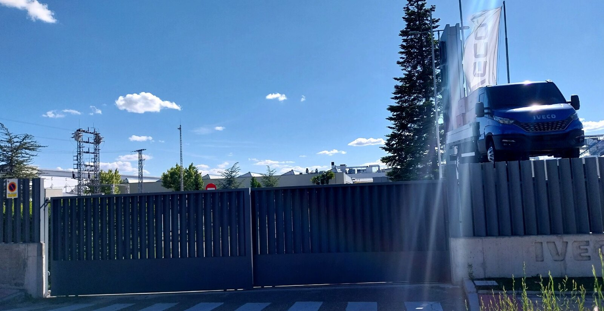
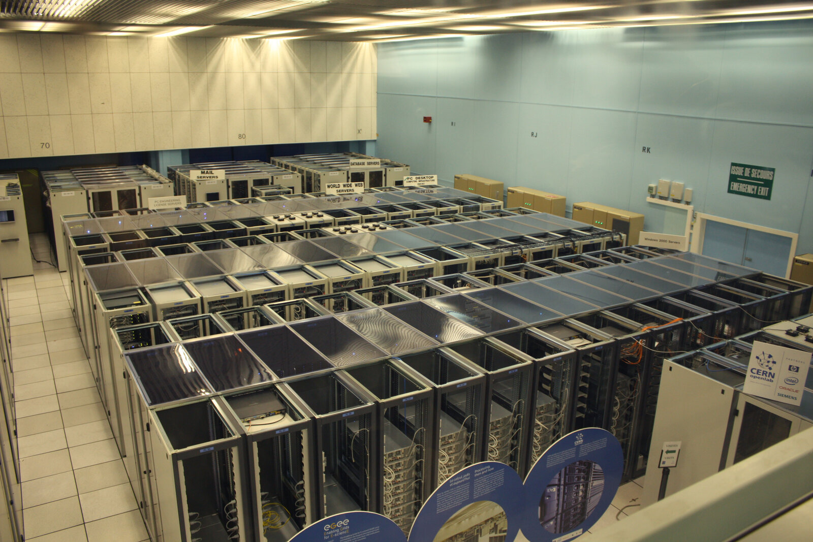
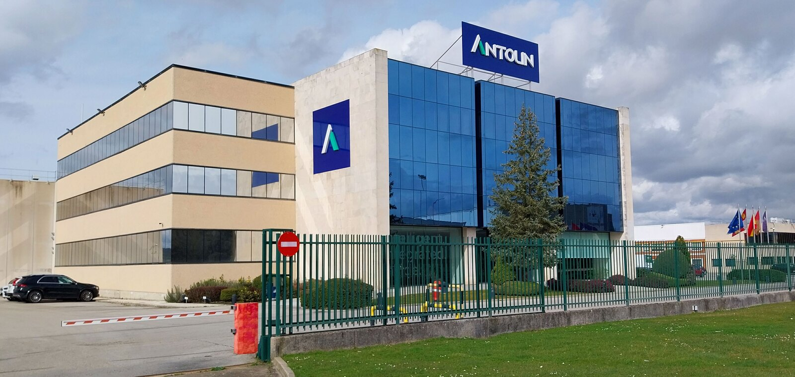
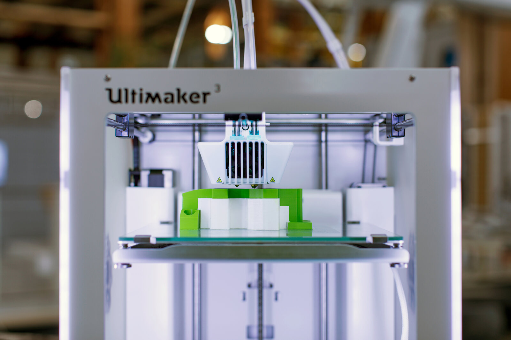
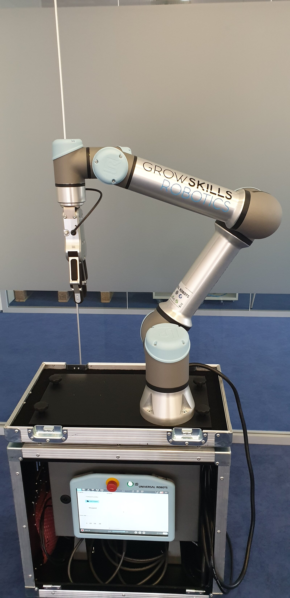
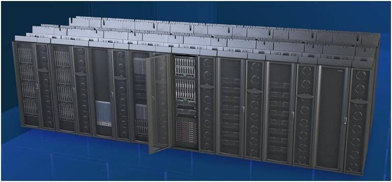
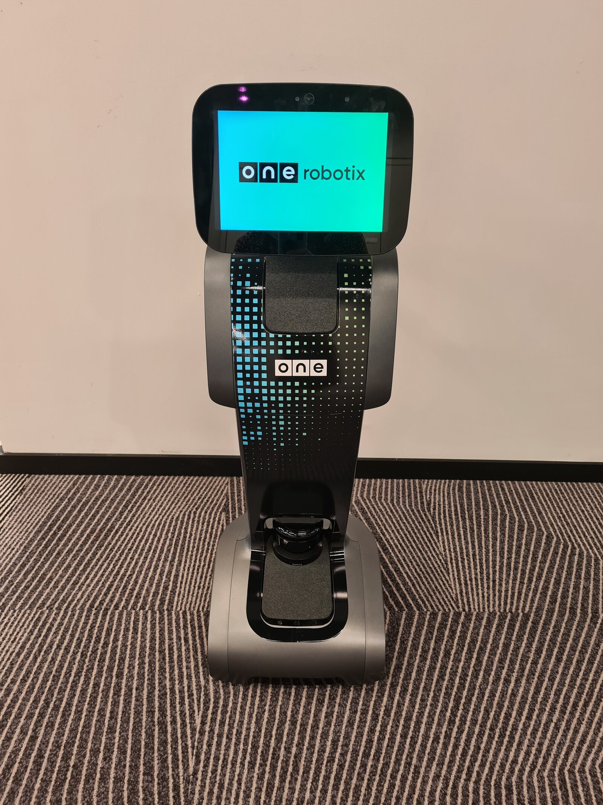

Unidad 2
Contenidos de la unidad
Tres sesiones: la primera de teoría, la segunda entera de práctica en equipo y la tercera de exposiciones, un bloque corto de teoría y la prueba.
Resultado de aprendizaje 2
Qué vas a saber hacer
Decir qué mejora una innovación en una empresa
Si hace las cosas con menos (eficiencia), mejor (calidad) o más limpias (sostenibilidad), y cómo se mide.
Explicar cómo cambia la innovación la estrategia y las áreas de una empresa
Dirección, personas, producción, ventas y administración.
Explicar por qué una empresa que no cambia pierde competitividad
Y cómo se adapta a los cambios de clientes, tecnología, competencia y normas.
Reconocer las tecnologías emergentes y decir qué pueden cambiar en una empresa
Doce tecnologías, con un caso real de 2025-26 cada una.
Son los cuatro criterios de evaluación del RA2 (ORDEN EDU/411/2025), en nuestras palabras.

Pregunta a la clase
¿Qué hace que una empresa sea «eficiente»?
Pensad en una tienda, un taller o una residencia que conozcáis. ¿Qué diríais de ella si fuera eficiente?
Respuestas típicas
- ●«Que sea rápida». Es una parte: hacer lo mismo en menos tiempo.
- ●«Que sea barata». Otra parte: hacer lo mismo gastando menos dinero, energía o material.
- ●«Que no falle». Eso es calidad, que es otra cosa. Una empresa puede ser rápida y barata y hacerlo mal.
Eficiente es conseguir el mismo resultado con menos recursos.
Eficiencia, calidad y sostenibilidad
Los sectores productivos
Los tres primeros son la clasificación clásica. El cuaternario y el quinario los añaden algunos autores para separar los servicios de conocimiento del resto. La informática está en el terciario o en el cuaternario según la clasificación; los cuidados, en el terciario.
Eficiencia, calidad y sostenibilidad
Tres efectos de la innovación en una empresa
Con menos
Eficiencia
El mismo resultado con menos tiempo, dinero, energía o materiales. Se mide con la productividad: lo que se produce dividido entre lo que se gasta.
- —Un script que hace las copias de seguridad solo, cada noche
- —Una app de partes de trabajo que ahorra a las auxiliares de ayuda a domicilio el papel de cada visita
Mejor
Calidad
Que el producto o el servicio cumpla lo que el cliente espera. Calidad interna: cómo se hace. Calidad externa: cómo lo ve quien lo recibe.
- —Un sistema de tickets en el que ninguna incidencia se pierde
- —Un registro digital de medicación que avisa si una toma no se ha anotado
Más limpio y más duradero
Sostenibilidad
Hacerlo gastando menos energía y materiales y generando menos residuos, y que la empresa dure. Incluye el efecto en las personas.
- —Alargar la vida de los equipos: reparar y reacondicionar en vez de tirar
- —Una residencia que sustituye pañales y guantes por productos con menos residuo
Eficiencia, calidad y sostenibilidad
Un caso con los tres efectos: Iveco Valladolid, 2026
Iveco invierte 233,76 millones de euros hasta 2027 en su fábrica de camiones de Valladolid, la única de la marca en España para vehículos pesados. La Junta la ha declarado proyecto prioritario.
- —92 robots nuevos para soldar cabinas (192 en total) y una nave de pintura automatizada
- —Nuevo almacén logístico
- —Sistemas de depuración de emisiones y de aguas
- —Capacidad de 111.000 cabinas al año y unos 1.000 empleos directos
Fuente: eldiario.es, 13/04/2026.

Figura 2.1. La fábrica de Iveco en Valladolid. Haz clic en la foto para verla en grande.
Eficiencia, calidad y sostenibilidad
Calidad es lo que el cliente nota
La calidad percibida es la diferencia entre lo que el cliente esperaba y lo que recibe. Para mejorarla se innova por dentro y por fuera.
- —Por dentro: procesos que no fallan. La norma ISO 9001 describe cómo organizar una empresa para asegurar la calidad, y muchas se certifican.
- —Por fuera: cómo se atiende al cliente, que es lo que él ve.
Cinco formas de innovar en la atención al cliente
- 1.Atender por varios canales: teléfono, chat, redes, app
- 2.Respuestas automáticas para lo repetitivo, con asistentes de inteligencia artificial
- 3.Anticiparse: avisar antes de que algo falle o caduque
- 4.Dejar que el cliente se ayude solo: tutoriales y preguntas frecuentes
- 5.Pedirle su opinión y usarla
Dos ejemplos
Un servicio técnico avisa por WhatsApp de que la reparación está lista y, días después, pregunta si todo va bien. Una residencia manda a las familias un mensaje semanal con cómo está la persona y les pide una valoración de 0 a 10.
21,1%
de las empresas españolas de diez o más empleados usaban inteligencia artificial a principios de 2025
Son 8,7 puntos más que un año antes. La tecnología llega a las empresas más deprisa de lo que parece desde fuera.
44,3 %
compran servicios en la nube
13,4 %
de las microempresas usan IA
26,6 %
vendieron por internet en 2024
Fuente: INE, Encuesta sobre el uso de TIC y del comercio electrónico en las empresas 2024-2025 (22/10/2025).
Eficiencia, calidad y sostenibilidad
Cómo se sabe si una innovación ha funcionado: los indicadores
Un indicador (KPI, por sus siglas en inglés) es un número que se mide antes y después de la innovación. Cinco que puede medir cualquier técnico:
Tiempo
Por tarea, por pedido o por visita
Coste
Por unidad producida o por servicio prestado
Errores
Incidencias, devoluciones, caídas, tomas olvidadas
Satisfacción
Una pregunta de 0 a 10 al cliente o a la familia
Consumo
Energía, agua o material por unidad
Eficiencia, calidad y sostenibilidad
Sostenibilidad: ODS y economía circular
De los 17 Objetivos de Desarrollo Sostenible de la ONU, tres tocan de lleno a las empresas: el 8 (trabajo decente y crecimiento económico), el 9 (industria, innovación e infraestructura) y el 12 (producción y consumo responsables).
Economía circular
Diseñar los productos para repararlos, reutilizarlos y reciclarlos, en vez de fabricar, usar y tirar.
- —Informática: equipos reacondicionados con garantía; el centro de datos proyectado en Torrelobatón (Valladolid), de 160 MW, con energía de origen principalmente renovable y agua de refrigeración en circuito cerrado (2026, en evaluación ambiental).
- —Cuidados: bancos de productos de apoyo que prestan sillas de ruedas, camas articuladas y grúas que otra persona ya no usa.
Un centro de datos consume mucha energía; la innovación está en cómo se alimenta y cómo se refrigera. Fuente: El Día de Valladolid, 07/08/2026.

Figura 2.2. Un centro de datos: filas de armarios con servidores que hay que alimentar y refrigerar sin parar.
Vídeo 2.1. Economía circular: qué es y principales retos. Canal de Telefónica, 2025.
Eficiencia, calidad y sostenibilidad
Economía circular en tres minutos
Mientras lo ves, apunta una medida circular que podría aplicar una empresa de vuestro sector: una tienda de informática, una residencia, un servicio de ayuda a domicilio. La ponemos en común al terminar.
- —Duración: 2:55
- —Se ve entero
Estrategia y áreas de la empresa
Innovar con un plan: estrategia y cultura de innovación
La innovación forma parte de la estrategia cuando la dirección decide en qué se innova, con qué dinero y para qué. Si no, son ideas sueltas que dependen de que alguien tenga un buen día.
Cultura de innovación es que proponer mejoras sea lo normal en toda la plantilla, no cosa de un departamento. Es la mejora continua de la UT1 con el apoyo de la dirección.
Tres señales de una empresa con cultura de innovación
Tiempo y canal para proponer
Un buzón, una reunión mensual, un rato de la jornada. Las ideas se responden, se acepten o no.
Formación
Nadie propone usar una herramienta que no conoce. La empresa enseña antes de pedir.
Los errores se analizan, no se castigan
Si probar algo nuevo y fallar tiene castigo, nadie vuelve a probar.
Estrategia y áreas de la empresa
La matriz de Ansoff: cuatro formas de crecer
Una empresa que quiere crecer solo puede combinar dos cosas: vender productos actuales o nuevos a clientes actuales o nuevos. Salen cuatro estrategias, y cada una suele ir con un tipo de innovación.
Cuanto más abajo y más a la derecha, más riesgo y más innovación hace falta. Igor Ansoff, 1957. Ejemplos de 2025-26.
Penetración de mercado
Vender más de lo mismo a los mismos. Netflix ofrece un plan más barato con anuncios en los países donde ya está.
Innovación incremental (marketing y canal)
Desarrollo de producto
Algo nuevo a los clientes de siempre. John Deere añade See & Spray a los pulverizadores que ya vendía (2025).
Innovación de producto
Desarrollo de mercado
Lo mismo a clientes nuevos. Marsi Bionics abre sede en México para vender allí su exoesqueleto (mayo de 2026).
Innovación incremental (organización, canal)
Diversificación
Producto nuevo para mercado nuevo. Vapat, grupo eólico de Castilla y León, entra en los centros de datos con el proyecto de Torrelobatón (2026).
Innovación radical o de modelo de negocio
Estrategia y áreas de la empresa
Qué cambia la innovación en cada área de la empresa
Estrategia y áreas de la empresa
Dos empresas de Castilla y León que innovan en su estrategia
Antolín · Burgos
Fabrica interiores de coche para casi todas las marcas. Su sistema de calefacción del habitáculo por radiación infrarroja gasta hasta un 70 % menos energía que la calefacción por aire: en un coche eléctrico, eso es más autonomía. Premio de sostenibilidad en los II Premios de Automoción y Movilidad de Castilla y León (2024).
Estrategia: diferenciarse por eficiencia en el coche eléctrico.
Grupo Lince · Valladolid
Empresa social que da empleo a personas con discapacidad. Ha montado un centro de fabricación aditiva (impresión 3D) donde trabajan; fabrica piezas y prototipos para la industria. Premio de captación y fidelización de talento en los mismos premios.
Estrategia: personas y sostenibilidad social como ventaja.
¿En qué área de la tabla anterior está cada una?

Figura 2.3. Sede de Antolín en Burgos. Fuente de los premios: Junta de Castilla y León, 28/11/2024.
Pregunta a la clase
¿Qué le pasa a una empresa que no cambia?
Pensad en Nokia y Blockbuster, de la UT1. Y en una residencia que sigue apuntando la medicación en papel cuando la inspección y las familias ya piden un registro digital.
Ideas
- ●Pierde clientes frente a quien ofrece lo mismo más rápido, más barato o más cómodo.
- ●Sus costes suben en comparación, porque el resto los ha bajado.
- ●No encuentra gente que quiera trabajar con herramientas viejas.
- ●Un día una norma nueva o un competidor nuevo la deja fuera del mercado.
Adaptarse no es adoptar todo lo que sale: es vigilar, probar y decidir.
Estrategia y áreas de la empresa
Adaptarse a los cambios del entorno
Qué cambia alrededor de la empresa
- —Los clientes: cómo compran y qué esperan (respuesta inmediata, todo desde el móvil)
- —La tecnología: lo que hoy es caro o raro mañana es normal
- —La competencia: incluida la que viene de otro sector o de otro país
- —Las normas: el Reglamento europeo de inteligencia artificial se aplica por fases desde 2025 y obliga a empresas de todos los sectores
Cómo se adapta una empresa
- —Vigilar el sector: ferias, prensa, competidores, proveedores
- —Formar a la plantilla antes de que haga falta
- —Probar a pequeña escala antes de invertir: un equipo, una planta, un mes
- —Colaborar con otros: innovación abierta (UT1)
Adoptar una tecnología emergente
Ventajas
- ●Crea productos y servicios nuevos
- ●Automatiza tareas repetitivas
- ●Reduce costes a medio plazo
- ●Resuelve problemas que antes no tenían solución
Inconvenientes
- ●Coste inicial alto
- ●Resistencia al cambio de la plantilla
- ●Formación constante
- ●Seguridad y privacidad de los datos
- ●Efecto en el empleo menos cualificado
Antes de implantar una tecnología se analizan los pros y los contras para esa empresa, no en general. Lo que le sale bien a Iveco puede no salirle bien a un taller de tres personas.
Vídeo 2.2. Estrategias de innovación. Canal ECONOSUBLIME, 2025.
Estrategia y áreas de la empresa
Estrategias de innovación
Apunta las estrategias que nombra. Al terminar: ¿cuál siguen Antolín y Grupo Lince?
- —Duración: 2:55
- —Se ve entero
Tecnologías emergentes
Catálogo de tecnologías emergentes (1 a 6)
Tecnologías emergentes
Catálogo de tecnologías emergentes (7 a 12)
Estas doce son las tecnologías de la práctica: cada equipo se lleva una. Hay casos de informática, de cuidados y de otros sectores (automoción, agricultura, energía).
Vídeo 2.3. Qué es la digitalización. Tecnologías emergentes. Canal ECONOSUBLIME, 2025.
Tecnologías emergentes
Qué es la digitalización y qué tecnologías la empujan
Apunta las tecnologías que nombra y que no están en el catálogo. Y piensa cuál elegiríais para la práctica si pudierais elegir.
- —Duración: 6:53
- —Se ve entero
Tecnologías emergentes
Cómo se presenta una tecnología: ejemplo resuelto
Las seis preguntas de la práctica, aplicadas a la impresión 3D. Esta es la estructura que seguirá vuestra presentación.
- 1. Qué esFabricar piezas capa a capa a partir de un archivo digital, sin molde.
- 2. EficienciaUna pieza de repuesto en horas, sin esperar días al proveedor ni pagar el envío.
- 3. CalidadPiezas a medida de cada cliente o de cada persona, no de serie.
- 4. SostenibilidadSolo se gasta el material que lleva la pieza, y no hay transporte.
- 5. Caso real con fuenteGrupo Lince (Valladolid): centro de fabricación aditiva donde trabajan personas con discapacidad; premio de la Junta, 28/11/2024. En los cuidados: férulas y adaptadores de cubiertos impresos a medida en terapia ocupacional.
- 6. Área y estrategiaProducción. En Ansoff, desarrollo de producto: cosas nuevas para los clientes de siempre.
- 7. Si no se adoptaEl competidor entrega antes y más barato. La residencia sigue esperando semanas una pieza que otra imprime en un día.

Figura 2.4. Impresora 3D de escritorio. Haz clic para verla en grande.
Clasifica el caso: tecnología, efecto y área
Un caso al azar y tres desplegables: qué tecnología usa, qué efecto principal tiene y a qué área de la empresa afecta. Pulsa Comprobar para corregir, Pista si te atascas y Otro ejercicio para seguir.
Algunos casos admiten dos respuestas en un desplegable; Resolver te dice cuáles. Al terminar, sorteo de tecnologías.
Presentación de una tecnología emergente
En equipo de tres, montad una presentación de ocho diapositivas sobre la tecnología que os ha tocado. Tiene que responder, en este orden, a las seis preguntas del ejemplo resuelto:
- 1.Qué es, con vuestras palabras
- 2-4.Cómo mejora la eficiencia, la calidad y la sostenibilidad
- 5.Un caso real de 2025 o 2026, con su fuente
- 6.A qué área de la empresa afecta y cómo cambia su estrategia
- 7.Qué le pasa a una empresa de vuestro sector que no la adopta
Duración
1 sesión (2 h)
Modalidad
Equipos de 3, una tecnología por sorteo
Entrega
Plantilla de Google Slides de Classroom, compartida con el profesor, al acabar la sesión
Material
Dos fuentes de partida por tecnología en Classroom y buscador. Sin inteligencia artificial generativa
- 1.Leed las dos fuentes y buscad el caso real (20 min)
- 2.Montad las ocho diapositivas en la plantilla (70 min)
- 3.Ensayad y repartid quién dice qué (20 min)
- 4.Revisad las fuentes y entregad (10 min)
Dónde buscar y cómo citar
Fuentes fiables para la práctica
- —Datos oficiales: INE (encuestas a empresas), Comisión Europea (Década Digital, Industria 5.0), ONTSI
- —Junta de Castilla y León: comunicacion.jcyl.es y empresas.jcyl.es
- —Prensa de 2025-26: eldiario.es, El Español, El País Tecnología, Xataka, prensa local (El Norte de Castilla, Diario de León)
- —Las propias empresas: notas de prensa y webs. Sirven para saber qué hacen, no para saber si funciona
Cómo se cita, en una línea
Quién lo publica · Título · Medio · Fecha · Enlace
Ejemplo. eldiario.es, «La Junta declara proyecto prioritario la inversión de 233 millones de Iveco en Valladolid», 13/04/2026, enlace.

Cómo se puntúa la práctica
25
Las seis preguntas respondidas con sentido y con vuestras palabras
10
Caso real de 2025-26, bien elegido y con fuente citada
15
Exposición clara en cinco minutos, repartida entre los tres, y respuesta a la pregunta
10
Actitud: participar en el montaje, rellenar las fichas de escucha y preguntar a otros equipos
Sesenta puntos de los cien de la unidad. Los otros cuarenta son la prueba corta de la sesión 3. En esta práctica la inteligencia artificial generativa no se usa: el buscador sí.
Exposiciones
Cinco minutos por equipo. Hablan los tres. Al terminar, una pregunta del profesor o de otro equipo.
Mientras escucháis, rellenáis la ficha de escucha de cada tecnología. Se entrega al final y cuenta en la nota de actitud.
Duración
60-70 minutos
Orden
Por sorteo
Cada equipo
5 minutos y una pregunta
Los demás
Ficha de escucha, en papel o formulario
La ficha de escucha, por cada tecnología
- 1.Qué es, en una línea
- 2.Qué efecto principal tiene: eficiencia, calidad o sostenibilidad
- 3.Si la adoptaríais en una empresa de vuestro sector (una tienda de informática, una residencia, un servicio de ayuda a domicilio) y por qué
Transformación digital e Industria 5.0
De la máquina de vapor a la Industria 5.0
Vapor y mecanización
Finales del siglo XVIII. La máquina sustituye a la fuerza de los brazos y del agua.
Electricidad y cadena de montaje
Principios del siglo XX. Producción en serie: cada operario hace una parte.
Electrónica e informática
Desde los años 70. Autómatas, ordenadores y los primeros robots industriales.
Todo conectado y con datos
Desde 2011. Internet de las cosas, nube, inteligencia artificial y robots que se comunican entre sí.
La tecnología al servicio de las personas
Desde 2021. Personas y máquinas colaboran; producción sostenible y capaz de aguantar crisis.
Transformación digital e Industria 5.0
Industria 4.0 frente a Industria 5.0
Industria 4.0
Digitalizar y automatizar. La máquina es el centro.
- ●Robots que hacen las tareas repetitivas
- ●Máquinas conectadas que envían datos en tiempo real
- ●Inteligencia artificial que predice fallos
- ●Objetivo: producir más y con menos errores
Ejemplo: Iveco Valladolid, 192 robots de soldadura.
Industria 5.0
Lo mismo que la 4.0, y además la persona es el centro.
- ●Personas y máquinas colaboran: cobots sin jaula
- ●Se mide el bienestar de la plantilla
- ●Producción sostenible: menos energía y residuos
- ●Resiliente: aguanta una pandemia o un corte de suministro
Ejemplo: Grupo Lince, impresión 3D con personas con discapacidad. Definición de la Comisión Europea (2021): industria centrada en las personas, sostenible y resiliente.

Figura 2.5. Un cobot: brazo robótico que trabaja junto a una persona sin jaula; si la toca, se para.
Vídeo 2.4. ¡La Industria 4.0 es la 4.ª Revolución Industrial! Canal de Bosch España, 2024.
Transformación digital e Industria 5.0
La Industria 4.0 en dos minutos
Apunta qué tecnologías del catálogo aparecen en el vídeo. ¿Cuántas de las doce salen?
- —Duración: 1:56
- —Se ve entero
Transformación digital e Industria 5.0
Esto pasa cerca de ti
SCAYLE · León
El centro de supercomputación de Castilla y León es el eje de la computación cuántica en la comunidad, dentro de los programas Quantum Spain y Q-CAYLE (2025).
Torrelobatón · Valladolid
Centro de datos de 160 MW y unos 140 empleos directos, en evaluación ambiental (2026).
Iveco · Valladolid
233,76 millones de euros y 92 robots nuevos hasta 2027 (2026).
Residencias públicas de la Junta
Robots sociales y andadores inteligentes en todas desde 2025; la última en estrenarlos, La Fuencisla de Segovia (diciembre de 2025).
¿En cuál de estos sitios podríais trabajar vosotros?


Prueba corta
Quince preguntas sobre estas diapositivas, en Classroom. Es el 40 % de la nota de la unidad; el otro 60 % ya lo tenéis hecho con la presentación y la exposición.
Duración
25 minutos
Modalidad
Individual, en clase
Formato
Google Forms en Classroom
Material
Sin apuntes ni inteligencia artificial
- 1.Diez preguntas de opción múltiple: efectos, indicadores, Ansoff, áreas, tecnología emergente, Industria 4.0 y 5.0
- 2.Cinco casos breves: tecnología, efecto y área, como en el ejercicio interactivo
Unidad 2
Resumen de la unidad
La innovación cambia tres cosas en una empresa: eficiencia, calidad y sostenibilidad. Se comprueba con indicadores medidos antes y después.
Innovar con estrategia es decidir en qué, con qué dinero y para qué. Alcanza a todas las áreas: dirección, personas, producción, ventas y administración.
La empresa que no se adapta al entorno pierde competitividad. Adaptarse es vigilar, probar y decidir, no adoptar todo lo que sale.
Las tecnologías emergentes (IA, IoT, nube, datos, robots, 3D, gemelos, realidad extendida, blockchain, 5G, cuántica, ciberseguridad) están en fase temprana: hay que evaluarlas antes de adoptarlas.
Transformación digital es cambiar cómo se trabaja, no escanear papeles. La Industria 4.0 conecta y automatiza; la 5.0 pone a las personas y la sostenibilidad en el centro.
Para ampliar
Recursos y fuentes
- DatosINE, Encuesta sobre el uso de TIC y del comercio electrónico en las empresas 2024-2025 (22/10/2025). ONTSI y KPMG, digitalización de la pyme (25/08/2026). Comisión Europea, informe de la Década Digital 2025 (junio de 2025) e Industry 5.0 (2021). Gartner, Hype Cycle de tecnologías emergentes 2025 (10/09/2025).
- Casoseldiario.es, Iveco Valladolid (13/04/2026). El Día de Valladolid, centro de datos de Torrelobatón (07/08/2026). Junta de Castilla y León: II Premios de Automoción y Movilidad (28/11/2024), inteligencia artificial y computación cuántica en SCAYLE (23/10/2025), ayudas a la Industria 4.0 (2026), teleasistencia avanzada y robots sociales en residencias (2025). El Español, Mercadona (15/12/2025). Teicon, plataforma Tokii (2025).
- ConceptosIgor Ansoff, matriz producto-mercado (1957). Norma ISO 9001, sistemas de gestión de la calidad. Reglamento (UE) 2024/1689 de inteligencia artificial.
- VídeosTelefónica: economía circular (youtu.be/PvAXgnM9H_A). ECONOSUBLIME: estrategias de innovación (youtu.be/XSfidiMwQ78) y digitalización y tecnologías emergentes (youtu.be/8HpBeRQ15zg). Bosch España: Industria 4.0 (youtu.be/5ezqgylG-us). Opcional: Telefónica, Industria 5.0 frente a 4.0 (6:04, 2024).
- NormativaORDEN EDU/411/2025, de 15 de abril, currículo del módulo CL32.